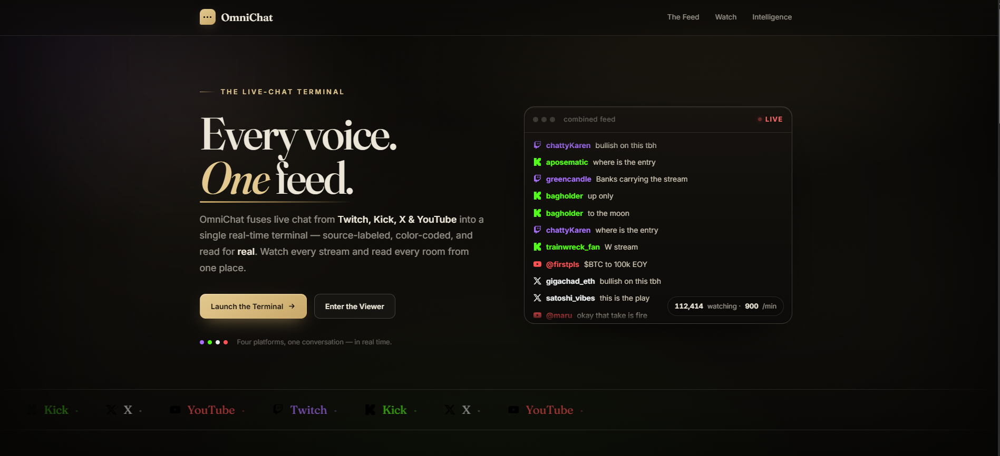

About
My path into engineering started with a slow old family PC that I refused to leave alone. Tinkering with it led to gaming, gaming led to writing iPhone apps in high school, and before long I was building my own PC and wiring up Arduino kits. That instinct — take it apart, figure it out, make it better — has driven everything since.
I recently earned my B.S. in Computer Engineering from Cal Poly Pomona, and what excites me most is working across the full stack of computing: designing FPGA logic and building circuits at the bottom, deploying fault-tolerant Linux infrastructure with automated failover and real-time monitoring at the top. Right now I'm looking for an entry-level cloud engineering role where I can build reliable systems and keep learning from people who do it well.
When I'm not in front of a terminal, I'm usually gaming — the hobby that pulled me into all of this in the first place.
Education
-
Grad. Dec 2025
B.S. Computer Engineering · Cal Poly Pomona ↗
Hands-on program spanning networking, operating systems, and embedded systems — from designing FPGA logic in Verilog and SystemVerilog to building and debugging physical circuits with transistors, capacitors, and op-amps. Capped by a senior design project deploying fault-tolerant Linux infrastructure with automated failover, real-time monitoring, and centralized logging.
Projects
-
IMG
Fault-Tolerant Infrastructure — Senior Design ↗
A 3-VM Linux environment simulating production cloud infrastructure: automatic Virtual IP failover with Keepalived (VRRP), Nginx reverse proxying to the active node, Prometheus + Grafana monitoring across 10+ panels, and Alertmanager webhooks that trigger automated rebuild and graceful failover — verified sub-minute recovery under simulated failures. Full report linked.
-

AWS SSH Honeypot — Threat Intel Pipeline ↗
A hardened, internet-facing SSH honeypot on an isolated AWS EC2 instance that captured 205,620 real attack events in 7 days. A Logstash → OpenSearch pipeline with GeoIP enrichment powers a live geographic attack map; ~94% of traffic was attributed to two automated botnet campaigns.
-
ASCON Lightweight Cryptography Benchmarking ↗
Implemented the NIST-standardized ASCON encryption algorithm on three architectures — ESP32, Arduino MEGA, and a Microblaze soft-core on a Nexys A7 FPGA — then benchmarked execution time, power, and cost: the ESP32 hit a 103× speedup over the MEGA at just 1.14× the power draw. Course repo is private; the demo video and full report are right here.
-
IMG
AWS Cloud & Cost Monitoring Projects ↗
A growing collection of hands-on AWS projects covering infrastructure, cost monitoring, alerting, and automation — built to sharpen cloud engineering and DevOps skills, with infrastructure-as-code in Terraform.
-

OmniChat ↗
A real-time chat aggregator that unifies live chat from Twitch, Kick, X, and YouTube into a single color-coded stream — with a public watch page and live audience analytics (mood, messages per minute, platform mix, top chatters).
-
IMG
Bust ↗
A GBA-era Pokémon-inspired top-down adventure RPG with gambling-based progression: travel five themed towns, earn Fame in mini-games, and collect Badges to unlock new areas. Built in Godot 4.6, targeting Steam.